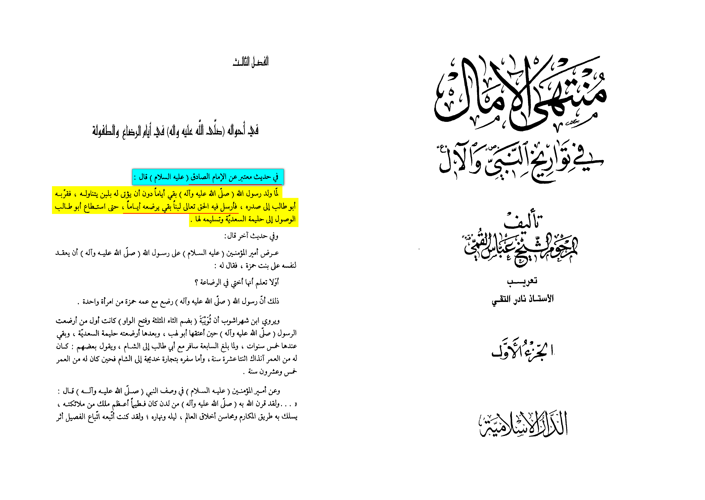

Abbas Al-Qummī states:
“It has been narrated with a reliable report from Al Sadiq عليه السلام he said:
‘When the Prophet of Allāh ﷺ was born, he didn’t recive any milk for a few days, so Abu Talib pulled him to his chest,
Allāh ﷻ then sent to him milk (in his chest) for him to feed on for a few days until Abu Talib was able to give him to Halima”
[Muntaha Al-‘Amal vol. 1 pg. 52]